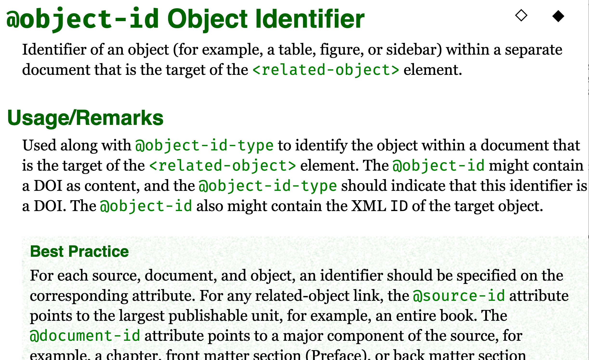
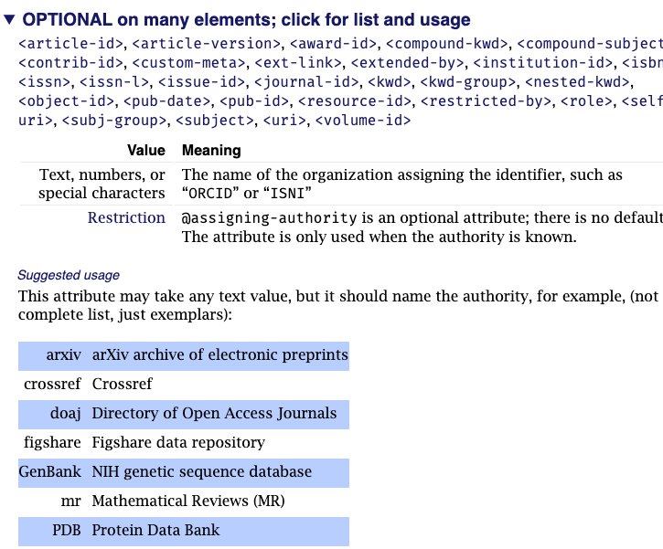
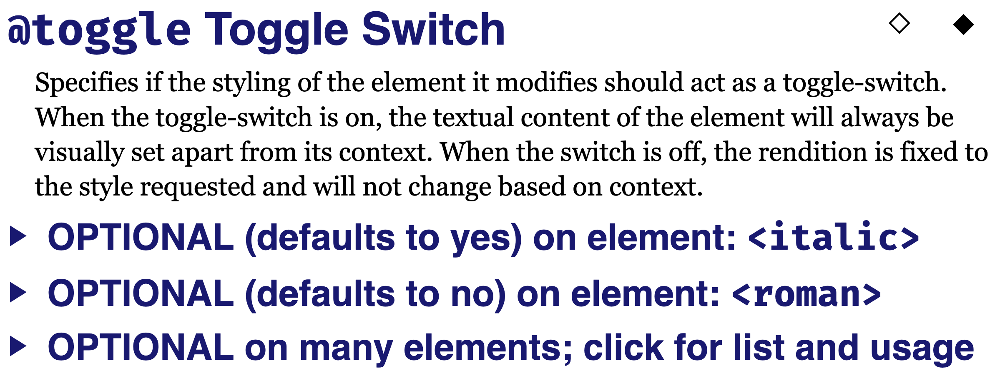
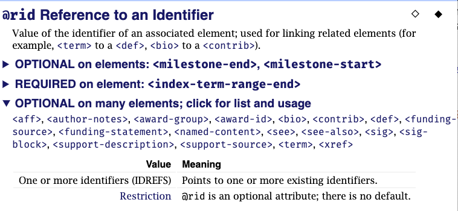
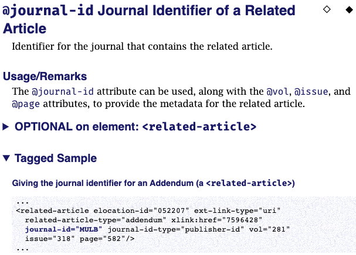

There is one element page for each element in the Tag Set. Each attribute page begins with the attribute name used in the XML files, a longer descriptive name, and a description, all information that is shared with the JATS Standard. Descriptions are not dictionary definitions, but narrative text describing the attribute, as the name implies.
A “Usage and Remarks” section often provides additional information on how to use the attribute, sometimes including “Best Practice” suggestions.
Figure 15. Attribute page for @object-id
|  |
Figure 16. Attribute values for @assigning-authority
|  |
Figure 17. @toggle is an attribute with some #FIXED values:
|  |
Some attributes are allowed on more than one element, and may have different meanings, default values, and suggested values depending on the element on which they are used. When an attribute is used in more than one element, there is a separate section for each group of elements that share the same usage. The section head identifies whether the attribute is optional, is required, has a default value (if any), and then names the other elements to which this attribute applies. If there are too many applicable elements to list in the heading, a message says “click for list and usage”
Figure 18. Other variations in attribute values (@rid)
|  |
Tagged Samples are provided for some attributes, though not all.
Figure 19. Tagged sample for @journal-id
|  |